ACCA5019 · UI/UX Portfolio · 2026
A complete UI/UX redesign of MealSwift's food delivery platform — researched, wireframed, and prototyped from the ground up using a Design Thinking methodology.
Phase 01
Before any design work began, the existing MealSwift platform was analysed against Nielsen's 10 Usability Heuristics and WCAG 2.1 accessibility standards. Twelve distinct usability failures were identified. The six most business-critical are detailed below alongside the design solutions implemented in the prototype.
Primary Audience
Mobile-first users who order food regularly. Prioritise speed, reliability, and transparency. Quick decision-makers driven by trust signals such as ratings, reviews, and clear delivery times.
Secondary Audience
Convenience-driven users ordering for group meals. Value variety, price transparency, and promotional offers. Benefit equally from a simplified checkout and clear order tracking.
Problem Identified
Confusing navigation with no clear user journey through the ordering process
Design Solution
Decluttered top navigation bar with a persistent search bar. Linear checkout flow modelled on established patterns from Deliveroo and Uber Eats, applying Nielsen's Consistency and Standards heuristic.
Problem Identified
Non-responsive mobile layout causing drop-offs on mobile devices
Design Solution
Mobile-first design methodology: all pages authored at 375px and scaled up to 1440px desktop. Fluid grids, flexible images, and CSS media queries applied throughout. Over 50% of food orders originate from mobile.
Problem Identified
Accessibility failures — insufficient contrast, missing alt text, ambiguous links
Design Solution
Colour palette verified against WCAG 2.1 AA (4.5:1 contrast minimum). All interactive elements have a 44×44px touch target. No font falls below 15px in any viewport. Semantic HTML with descriptive labels throughout.
Problem Identified
Low-quality photography failing to stimulate appetite or build trust
Design Solution
High-quality food imagery with warm, natural lighting integrated into the hero section and restaurant cards. Photography direction established during the mood board phase and maintained consistently across all five pages.
Problem Identified
Inefficient checkout process with weak CTAs leading to cart abandonment
Design Solution
Two-column checkout layout with sticky cart panel (Nielsen's Recognition Rather Than Recall). Trust badges, address autocomplete, editable cart, and a high-contrast Place Order CTA address Nielsen's Error Prevention and User Control heuristics.
Problem Identified
No real-time order tracking, reducing post-order satisfaction and repeat orders
Design Solution
Dedicated Order Tracking page with a four-step progress timeline: Order Confirmed → Being Prepared → Out for Delivery → Delivered. Directly addresses Nielsen's Visibility of System Status heuristic.
Phase 02
The mood board translates the research phase into a concrete visual language. It establishes the colour palette, typography, photography direction, and brand voice keywords that inform every subsequent design decision in the wireframes and high-fidelity prototype.
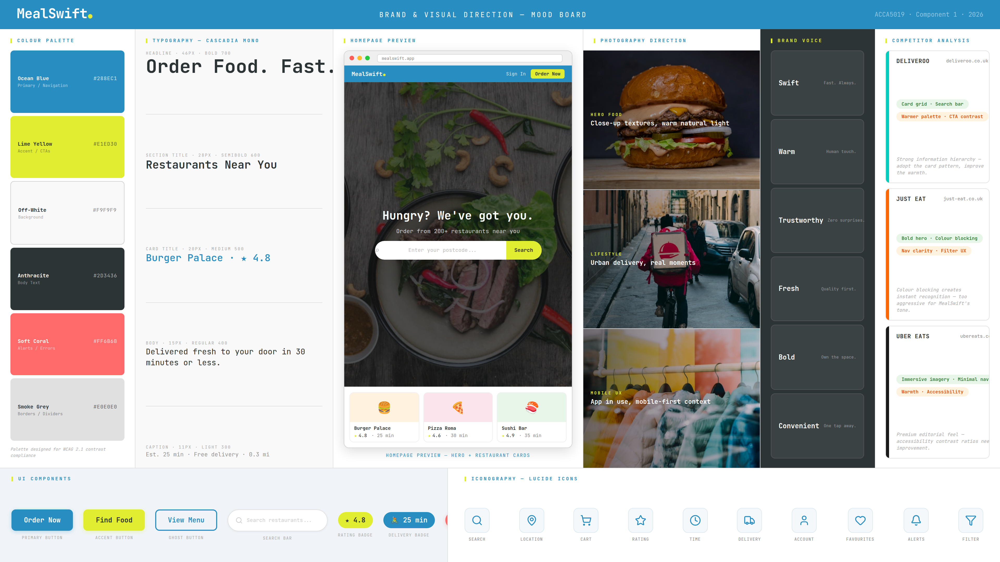
Phase 03
Low-fidelity wireframes define the structural blueprint of each page before any visual treatment is applied. Designed at 1440px desktop viewport using greyscale only, placeholder imagery, and annotations explaining key UX decisions. This phase ensures layout and information hierarchy are resolved before high-fidelity design work begins.
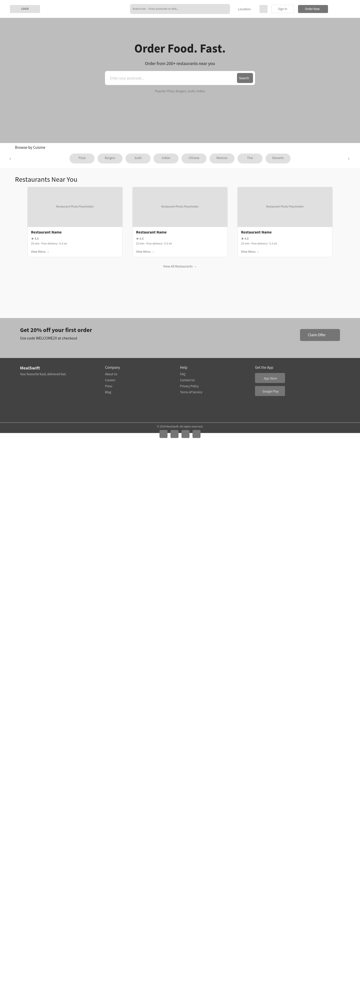
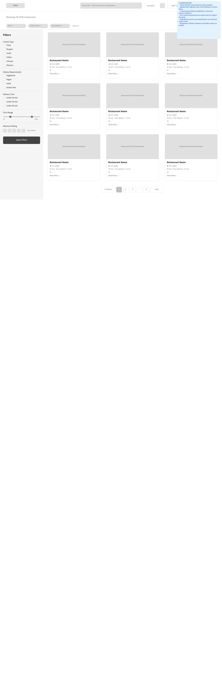
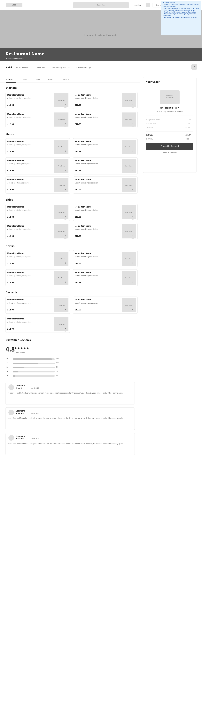
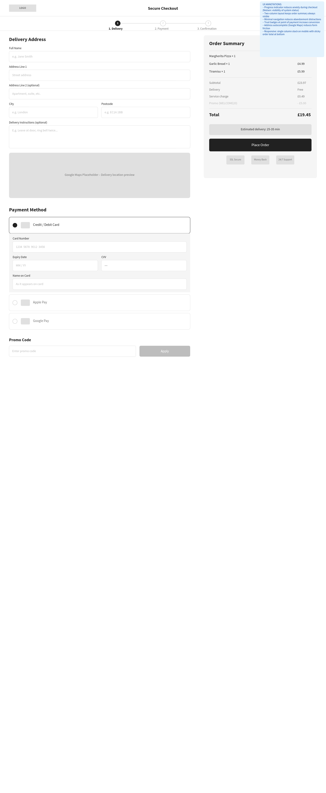
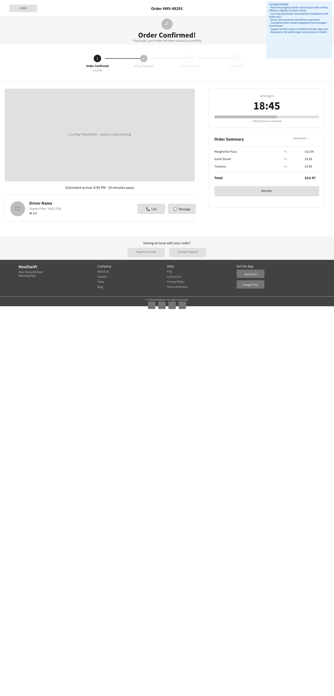
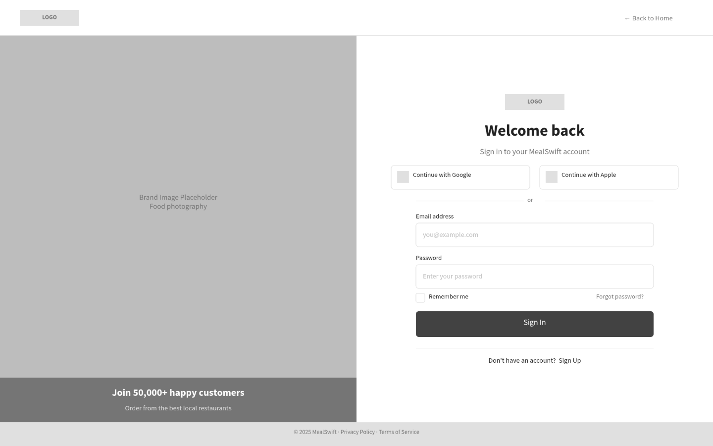
Phase 04
The high-fidelity prototype applies the visual language from the mood board to the structural foundations of the wireframes. All five required pages are fully designed at 1440px desktop viewport with interactive navigation: Homepage → Restaurant Listing → Restaurant Menu → Checkout → Order Tracking. Designed in Penpot (open-source) following migration from Figma due to compatibility constraints.
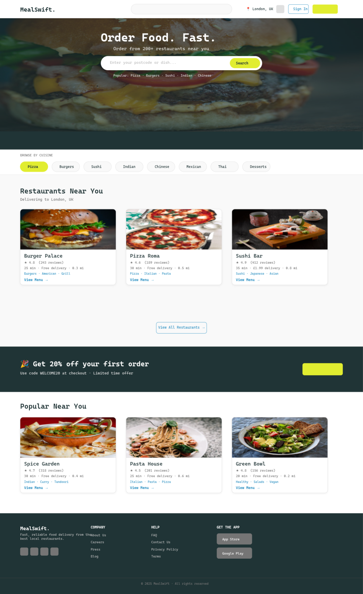
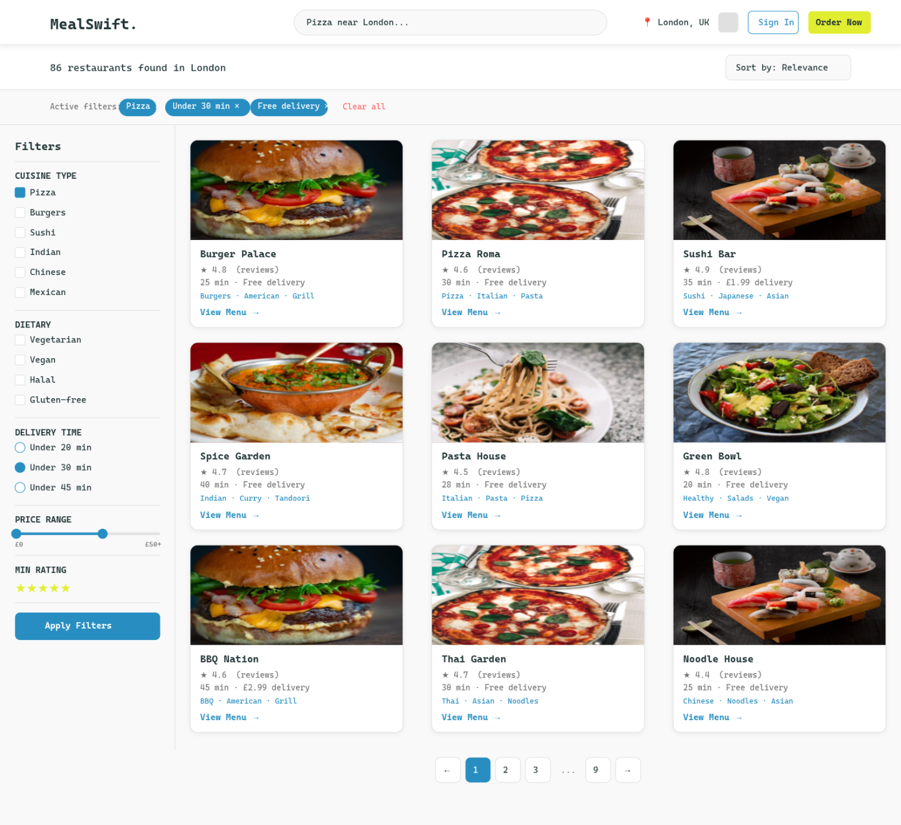
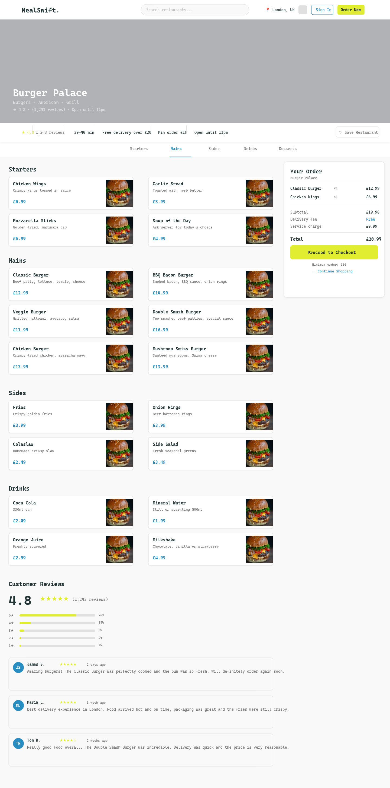
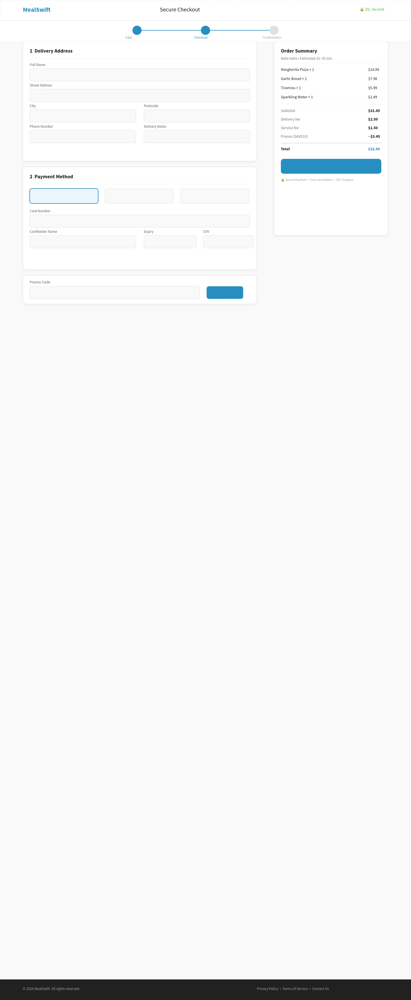
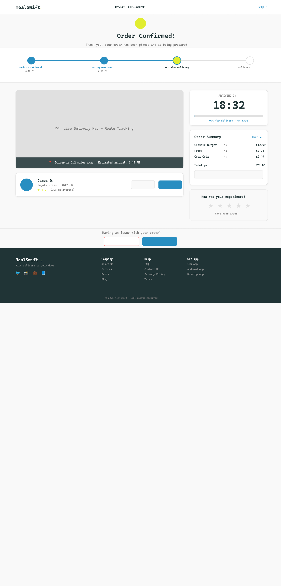
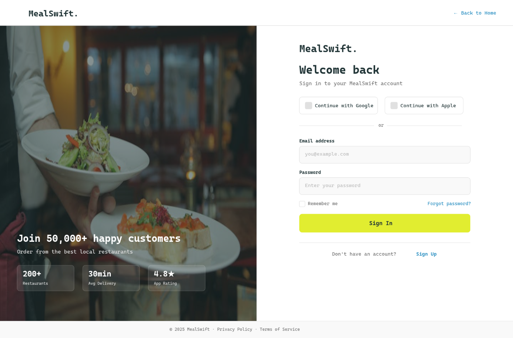
Design Rationale
Every design choice in this project is grounded in a specific UX theory, accessibility standard, or academically-cited research finding. The cards below map each major decision to its academic justification.
Ocean Blue (#288EC1) communicates trust and reliability for a platform handling payment data. Lime Yellow (#E1ED30) stimulates appetite and directs attention to CTAs without replicating Deliveroo's teal or Uber Eats' green. Brand colour consistency increases recognition by up to 80% (Khandelwal & Singh, 2024).
All pages authored at 375px and scaled to 1440px desktop. Bhanarkar et al. (2023) argue mobile-first should be the default for any new web project, given that the majority of worldwide traffic originates from mobile devices. Non-responsive interfaces significantly increase the risk of cart abandonment.
Navigation redesign applies Visibility of System Status (order tracking timeline), User Control and Freedom (editable cart), Consistency and Standards (linear checkout flow), and Recognition Rather Than Recall (sticky cart panel always visible on the menu page). Each heuristic is cited in the report.
Proximity and similarity group restaurant cards and menu items into scannable clusters. Consistent visual hierarchy across all five pages reduces cognitive load and supports the quick decision-making behaviour characteristic of MealSwift's target audience.
Sticky cart panel, trust badges (SSL, money-back), address autocomplete, and a high-contrast Place Order CTA address the abandoned cart issue. The two-column checkout layout minimises friction at the most critical conversion point in the ordering journey.
Acosta-Vargas et al. (2022) found none of the top 50 e-commerce websites fully conformed to WCAG 2.1 — contrast ratio errors accounted for 54.4% of barriers. MealSwift's palette achieves 4.5:1+ contrast throughout, all touch targets are 44×44px minimum, and no font falls below 15px.
Phase 05 — Academic Report
The full academic report documents and justifies every design decision within an IEEE-referenced framework. Approximately 2,000 words across five sections: Introduction, MealSwift Redesign, Responsive Design Implementation, Implementation, and Conclusion. Eight peer-reviewed sources (2020–2026).
{kind=link}